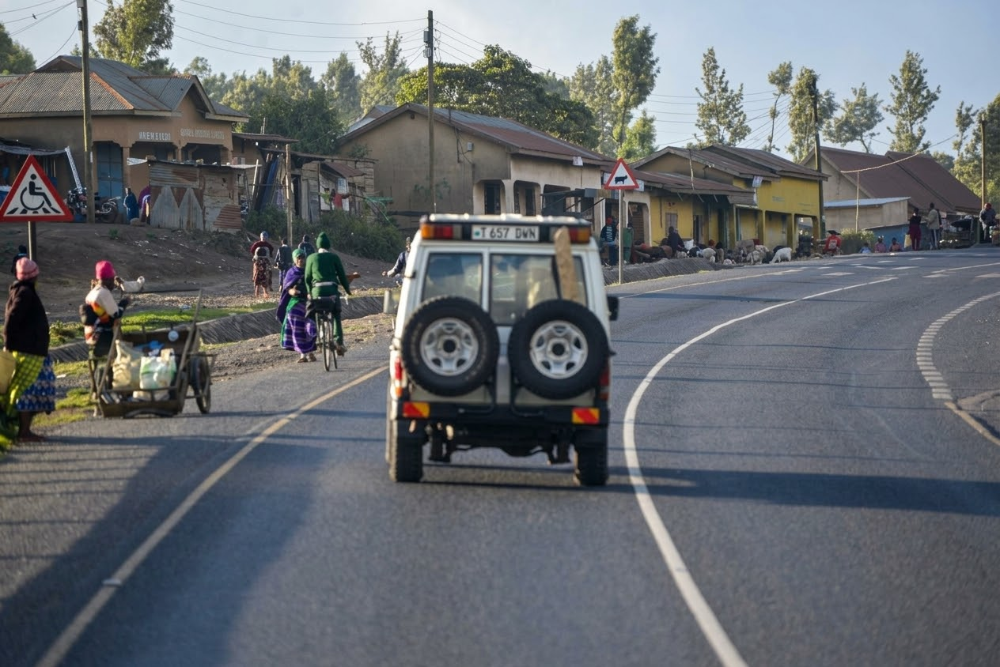
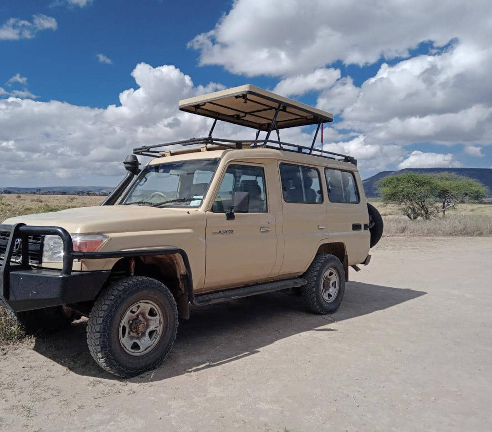

Fuel Stops
Plan where to refuel before longer sections of your route and understand why fuel planning matters.
View fuel guide →A practical guide to exploring Tanzania independently — from choosing a 4x4 and understanding the roads to planning routes, fuel stops, national parks, camping and realistic travel costs.
Ask us about self-driving in Tanzania, routes, 4x4s, fuel stops, camping, national parks or preparing for your journey.
Self-driving in Tanzania gives you the freedom to travel at your own pace, but preparation matters. Roads vary from paved highways to gravel roads and rough tracks, distances can be long, and national parks have their own rules and conditions.
This guide brings the practical information together so you can understand the journey before you arrive.
Tanzania travel information can change. Check the date and source of important information, especially park fees, road conditions, regulations and entry requirements.

You do not have to read everything at once. Start by understanding how self-driving works, then plan your journey and finally prepare for the road.
Start with the basics of self-driving in Tanzania. Learn about driving rules, vehicles, roads, national parks and the practical realities of travelling independently.
Start with the basics →Explore routes and itineraries, understand distances, plan fuel stops, choose camping or accommodation and work out the practical details of your trip.
Plan your route →Use the checklist to prepare your documents, vehicle, camping equipment, navigation, fuel planning and other essentials before departure.
Get ready →Use this guide as your starting point. Work through the sections that matter to your trip — from choosing a vehicle and understanding Tanzanian roads to planning fuel, routes, national parks, camping, costs and your final preparations.
Begin with the essentials of self-driving in Tanzania, including what to expect and how to approach your trip.
Understand vehicle requirements, 4x4 capability, equipment and what to consider before choosing a vehicle.
Learn what to consider when renting a vehicle for an independent Tanzania road trip.
Prepare your documents, equipment, navigation, food, fuel and other essentials before departure.
Learn about driving rules, speed limits, road signs and practical considerations for driving independently.
Understand paved roads, gravel roads, tracks, seasonal conditions and what different routes can involve.
Learn how to plan fuel for longer routes and why you should consider fuel availability before setting off.
Get familiar with important Tanzanian road signs, traffic rules and practical driving considerations.
Explore major road routes and understand how Tanzania's destinations connect by road.
Explore example journey structures and learn how to build a realistic Tanzania self-drive itinerary.
Learn about Tanzania's protected areas and the practical considerations for independent travellers.
Check practical updates that may affect routes, regulations and self-drive travel planning.
Understand camping options, roof tents, ground tents, campsites and practical camping preparation.
Understand vehicle rental, fuel, park fees, camping, accommodation and other major road-trip costs.
Find useful maps, official websites, planning references and other resources for independent travellers.

A successful Tanzania road trip is not only about having a capable vehicle. You need to understand where you are going, how long the roads take, where fuel is available and what conditions you may encounter.
Before setting off, consider:
Some parts of a Tanzania self-drive trip can change over time. Use these pages to check important information before travelling.
Plan where to refuel before longer sections of your route and understand why fuel planning matters.
View fuel guide →Understand different road surfaces and conditions you may encounter during a Tanzania road trip.
Read road guide →Check practical updates and information that may be relevant when preparing for your journey.
View updates →Tanzania Self Drive Guide is an independent information resource. If you need a suitable 4x4, camping equipment, route planning or practical assistance in Tanzania, African Clay Safaris can help with the next step.